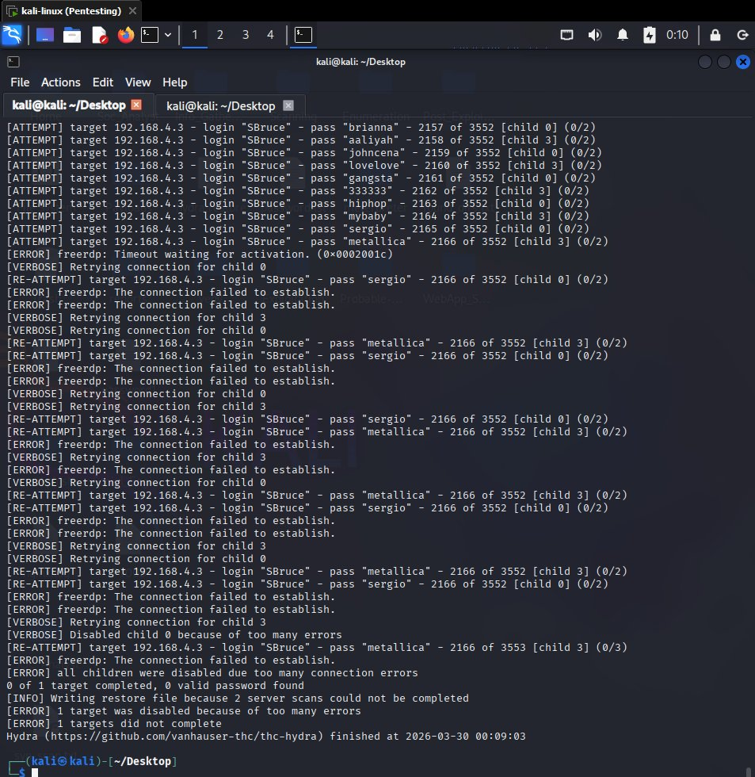
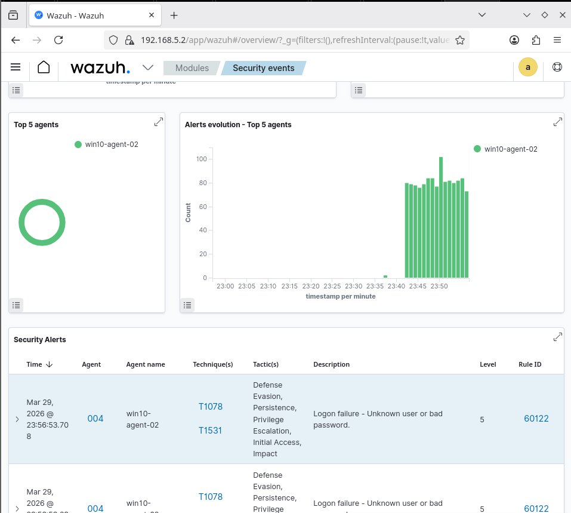
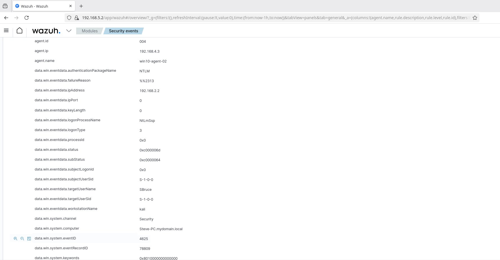
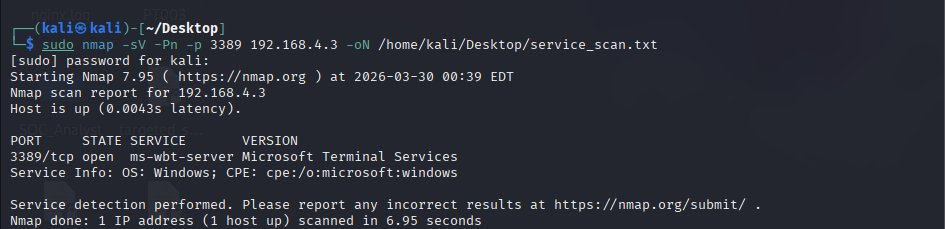
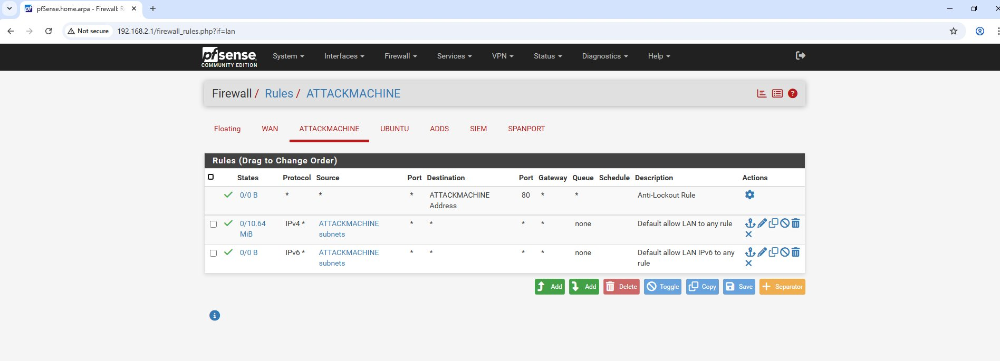
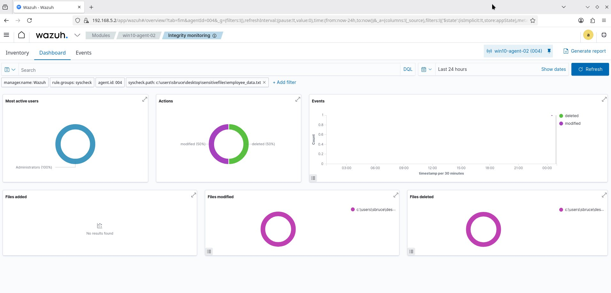
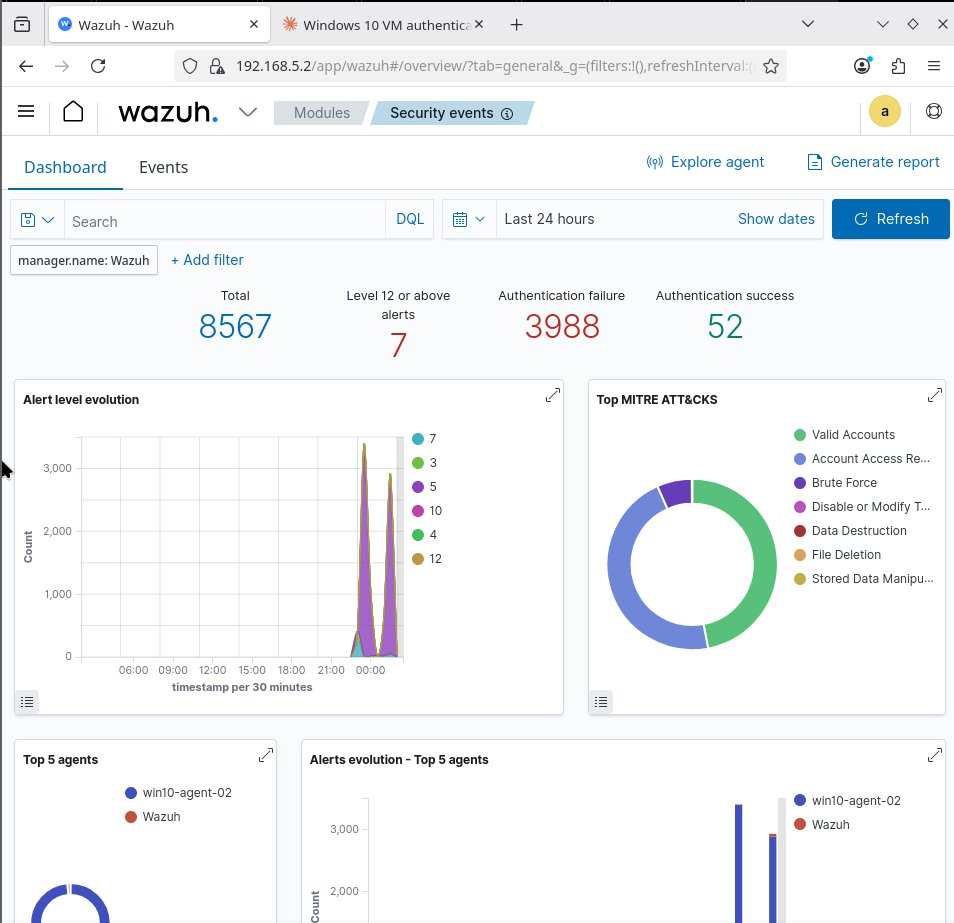

# Overview
I designed and built a segmented Security Operations Centre lab replicating a realistic corporate network. The environment features an attacker subnet isolated from a corporate LAN, a dedicated SIEM subnet running Wazuh, and a pfSense firewall controlling all inter-subnet traffic.
From this infrastructure, I simulated brute force attacks, network reconnaissance, and file tampering — then detected every one of them through Wazuh’s alerting, File Integrity Monitoring, and custom correlation rules I wrote myself.
This project was inspired by Sean Nanty’s detection and monitoring home lab series, which I adapted and extended with my own attack simulations, troubleshooting, and detection engineering.
# Lab Architecture
All VMs run on VMware Workstation with each subnet mapped to a dedicated virtual network. pfSense routes between all segments, enforcing the same segmentation model used in enterprise environments.
| VM | IP Address | Subnet | Role |
|---|---|---|---|
| pfSense | 192.168.2.1 | All subnets | Firewall / router |
| Kali Linux | 192.168.2.2 | Attacker (192.168.2.0/24) | Attack simulation |
| Windows 10 | 192.168.4.3 | Corporate LAN (192.168.4.0/24) | Target endpoint + Wazuh agent |
| Windows Server | 192.168.4.x | Corporate LAN (192.168.4.0/24) | Active Directory + DNS |
| Ubuntu VM | 192.168.3.2 | Monitoring (192.168.3.0/24) | Reserved for future monitoring |
| Wazuh Manager | 192.168.5.2 | SIEM (192.168.5.0/24) | Centralised SIEM (Debian) |
# Attack Simulations & Detection
RDP Brute Force Attack
Attack: Used Hydra from Kali to launch a credential stuffing attack against the Windows 10 VM’s RDP service (port 3389), targeting the SBruce account with a wordlist of 3,550 passwords.
hydra -l SBruce -P /home/kali/passwords.txt rdp://192.168.4.3 -t 4 -vV
Detection: Wazuh captured 3,988 authentication failure events (Windows Event ID 4625). The attacker IP (192.168.2.2), workstation name (“kali”), and NTLM logon type 3 were all visible in the alert metadata. MITRE ATT&CK techniques automatically mapped: T1078 (Valid Accounts) and T1110 (Brute Force).
Hydra completed 2,166 attempts before RDP stopped accepting connections — a realistic outcome, as services often become unresponsive under sustained brute force load.

Hydra running credential stuffing against RDP — 2,166 of 3,552 attempts before connection failure

Wazuh alert list — Rule 60122 firing with MITRE T1078/T1531 mapping

Alert detail — source IP 192.168.2.2, Event ID 4625, status 0xc000006d
Network Reconnaissance (Nmap)
Attack: Ran SYN stealth scans, targeted service scans, and service version detection from Kali against the Windows 10 target.
sudo nmap -sS -Pn -p 1-1000 192.168.4.3 # SYN stealth scan sudo nmap -sS -Pn -p 135,139,445,3389,5985 192.168.4.3 # Targeted scan sudo nmap -sV -Pn -p 3389 192.168.4.3 # Version detection
Findings: The stealth scan showed all 1,000 ports as filtered — pfSense was dropping unsolicited SYN packets, demonstrating effective segmentation. The targeted scan revealed only port 3389 (RDP) as open. Version detection identified Microsoft Terminal Services on Windows.
Security finding: The attacker interface had a default “allow LAN to any” rule with no logging. Scans passed through without being recorded. In production, this should be replaced with specific allow rules and logging enabled on all interfaces.

Nmap version detection — RDP identified as Microsoft Terminal Services

pfSense rules — overly permissive “allow LAN to any” on attacker interface
File Integrity Monitoring (FIM)
Setup: Configured the Wazuh agent on Windows 10 to monitor a sensitive directory in real time by adding a custom syscheck directive to ossec.conf:
<directories check_all="yes" realtime="yes" report_changes="yes"> C:\Users\SBruce\Desktop\SensitiveFiles </directories>
Simulation: Created, modified, and deleted a file containing simulated sensitive data to trigger FIM alerts.
Detection: Wazuh captured file modification and file deletion events with full path details and user attribution. MITRE ATT&CK mappings included T1485 (Data Destruction), T1565 (Stored Data Manipulation), and T1070.004 (File Deletion).

FIM dashboard — file modification and deletion detected with path and user attribution
Custom Wazuh Detection Rule
Problem: The default Wazuh rule 60122 flags every single failed logon as level 5 (low severity). A single typo and a sustained brute force attack trigger the same severity.
Solution: Wrote a custom correlation rule that escalates to high severity only when the pattern indicates an actual attack:
<group name="custom_brute_force,">
<rule id="100001" level="12" frequency="8" timeframe="120">
<if_matched_sid>60122</if_matched_sid>
<description>CUSTOM: RDP brute force attack detected</description>
<mitre>
<id>T1110</id>
</mitre>
</rule>
</group>
How it works: The rule chains to existing rule 60122 and only triggers when 8+ failed logons occur within 120 seconds, escalating from level 5 to level 12. MITRE T1110 (Brute Force) maps the alert to the framework for structured reporting.
Result: After deploying the rule and re-running Hydra, 7 high-severity (level 12) alerts appeared on the dashboard — up from zero. The MITRE ATT&CK visualisation now shows “Brute Force” as a distinct detection category.

Dashboard after custom rule — 7 Level 12 alerts, Brute Force visible in MITRE ATT&CK chart
# Troubleshooting
Wazuh Agent: “Never Connected”
After registering the Windows 10 agent, the dashboard showed “Never connected.” Here’s how I diagnosed and fixed it:
Test-NetConnection 192.168.5.2 -Port 1514 returned TcpTestSucceeded: True — ruled out firewall issuesGet-Service WazuhSvc showed status StoppedThis mirrors real-world SOC operations where agents deployed via templates often ship with placeholder addresses. The ability to trace the issue from dashboard status → service state → log analysis → config fix is the same diagnostic workflow used in production SIEM environments.
# MITRE ATT&CK Coverage
| Technique | Name | Detection Method |
|---|---|---|
| T1110 | Brute Force | Custom Wazuh rule 100001 (correlation of Event ID 4625) |
| T1078 | Valid Accounts | Wazuh rule 60122 (failed logon attempts) |
| T1046 | Network Service Scanning | Nmap scan results correlated with pfSense logs |
| T1485 | Data Destruction | Wazuh File Integrity Monitoring |
| T1565 | Stored Data Manipulation | Wazuh FIM — file modification detection |
| T1070.004 | Indicator Removal: File Deletion | Wazuh FIM — file deletion detection |
# Key Takeaways
Detection engineering is more than deploying tools. The default Wazuh ruleset flagged every failed logon identically. Writing a custom correlation rule that distinguishes a single typo from a sustained attack is the difference between a noisy SIEM and a useful one.
Network segmentation works — but only if you verify it. The Nmap scan proved pfSense was filtering traffic. However, the overly permissive attacker interface rule and lack of firewall logging were gaps that would be unacceptable in production.
Troubleshooting is the real skill. The Wazuh agent enrollment issue required methodical diagnosis across four layers: network connectivity, service status, application logs, and configuration files.
Visibility requires configuration. File Integrity Monitoring only works when you define what to monitor. The default Wazuh FIM configuration doesn’t cover user-created directories — explicit path configuration and real-time monitoring must be enabled.